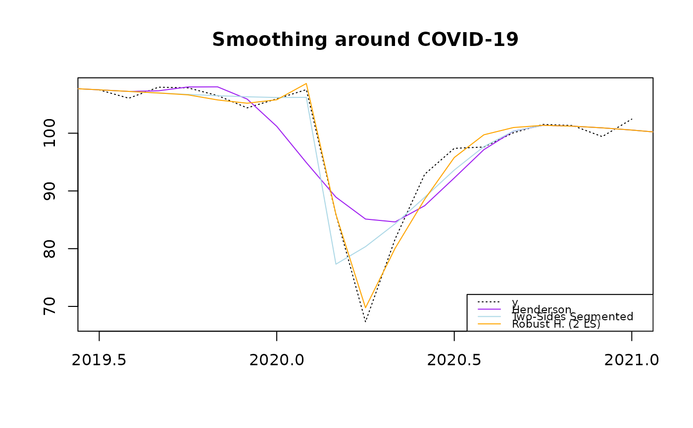

Segmented Smoothing around Breakpoints
Arguments
- x
input time-series.
- breaks
A list of breakpoints (dates) where the series should be split for smoothing.
- break_method
Method to split the series (see details).
- smoothing_method
Smoothing method to use on each segment :
henderson_smoothing()orclf_smoothing().- ...
Other parameters passed to the smoothing method.
Details
Two methods are available to estimate the trend-cycle around breakpoints:
"one-side": The trend-cycle is estimated on the all data and the estimates are overwritten after each breakpoint with the estimates obtained by smoothing only the data after the breakpoint."two-sides": The trend-cycle is estimated on each segment defined by the breakpoints and the estimates are combined to form the final trend-cycle.
The "parameters" field of the returned object corresponds to the parameters of the last segment (used to build confidence intervals and implicit forecasts).
Examples
x <- window(publishTC::french_ipi[, "manufacturing"], start = 2015)
tc_h <- henderson_smoothing(x, length = 13)$tc
breaks <- list(c(2020, 3))
tc_h_2s <- segmented_smoothing(x, breaks = breaks, break_method = "two-sides", length = 13)$tc
tc_h_rob <- henderson_robust_smoothing(x, ls = c(2020+ (3-1)/12, 2020+ (4-1)/12))$tc
plot(window(x, start = 2019.5, end = 2021),
main = "Smoothing around COVID-19",
xlab = NULL, ylab = NULL,
lty = 3
)
lines(tc_h, col = "purple")
lines(tc_h_2s, col = "lightblue")
lines(tc_h_rob, col = "orange")
legend(
"bottomright",
legend = c("y", "Henderson", "Two-Sides Segmented", "Robust H. (2 LS)"),
col= c("black", "purple", "lightblue", "orange"),
lty = c(3, 1, 1, 1, 1),
cex = 0.7
)
